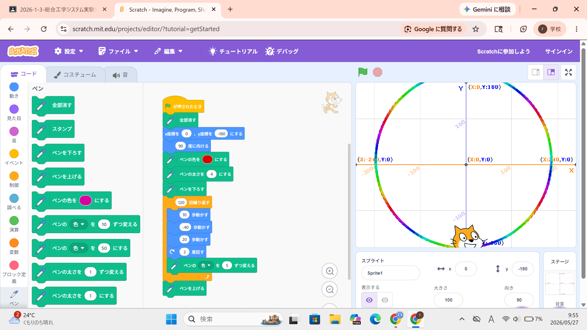
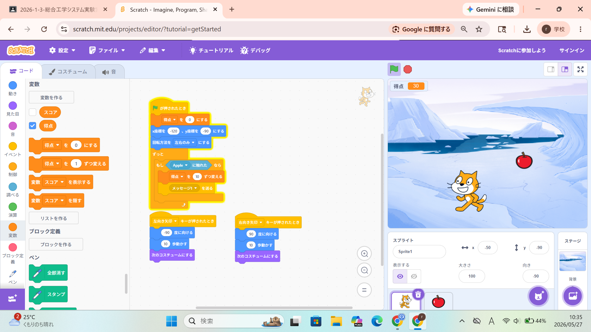

1週目のレポート ： 公大高専１年実習I-1
3a班18番 桑原健
第1週目
1-1 サイエンスアート

1.内容
プログラミングについて学び、Scratchのサイトを使って実際にプログラムを作成した。
ペンを下ろした状態で猫を動かすプログラムを作ったことでサイエンスアートを作成した。
2.感想
プログラミングを用いることでも絵をかいたり、不思議な図形のアートを作成できることが面白いと思った。
自分が思っていた図形ができないことが多かったのでもっとプログラミングの知識をつけたいと感じた。
1-2 ゲーム

1.内容
リンゴを落とし、猫を動かしてリンゴをキャッチすると得点が表示されるプログラムを作成した。
乱数や音を鳴らすなどのプログラムを使ってより楽しめるようにゲームを作成した。
2.感想
自分でゲームを作るという機会があまりないので新鮮だった。実際にゲームを作って、よりゲームを面白くするという
工夫が難しいと感じ、ゲーム開発者がすごいと思った。 また、ほかにもゲームを作ってみたいとも思った。
1-3 ホームページ作成
私のホームページ
1.内容
Githubのサイトを使ってホームページを作成した。
HTMLにタイトルや文章を打ち込んで自分の特技や趣味などを書き、自己紹介のホームページを作成した。
2.感想
ホームページを作ったことがなかったので、ホームページを作ることに対して最初は難しい印象があった。
しかし、実際には文字を書き換えたり、加えたりするだけだったのでホームページを作成することは楽しかった。
また、0からホームページを作成できるようにコードについて学びたいと思った。
各ページへのリンク
1週目のレポート
2週目のレポート
3週目のレポート
私のホームページ